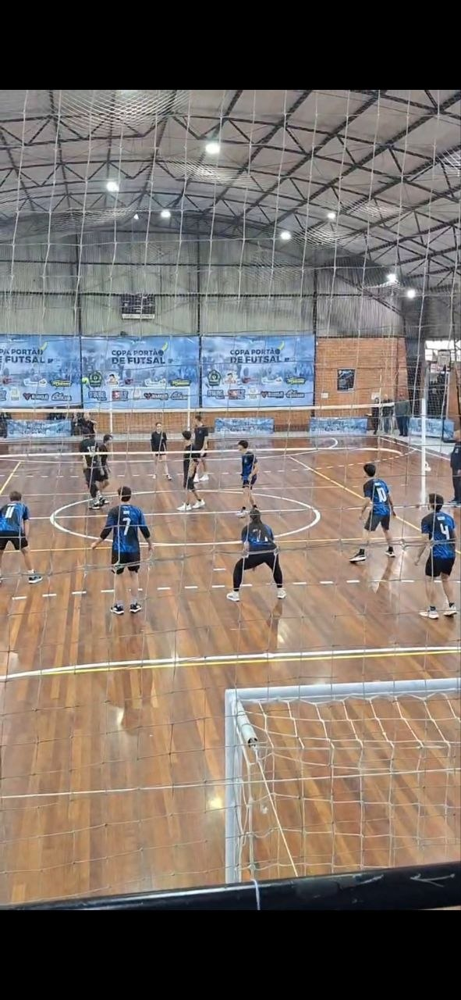
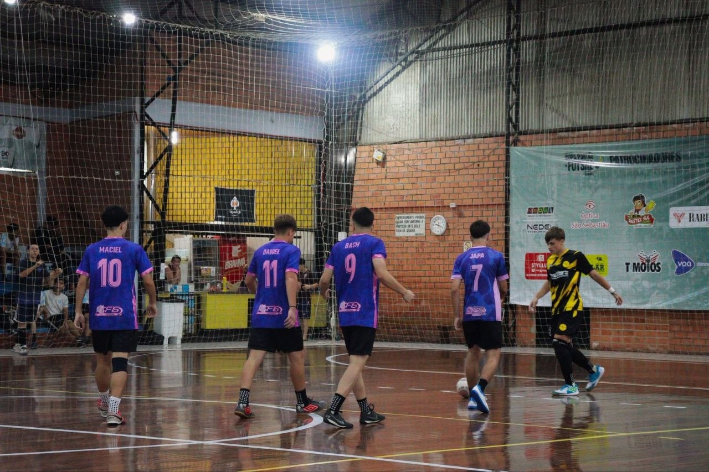
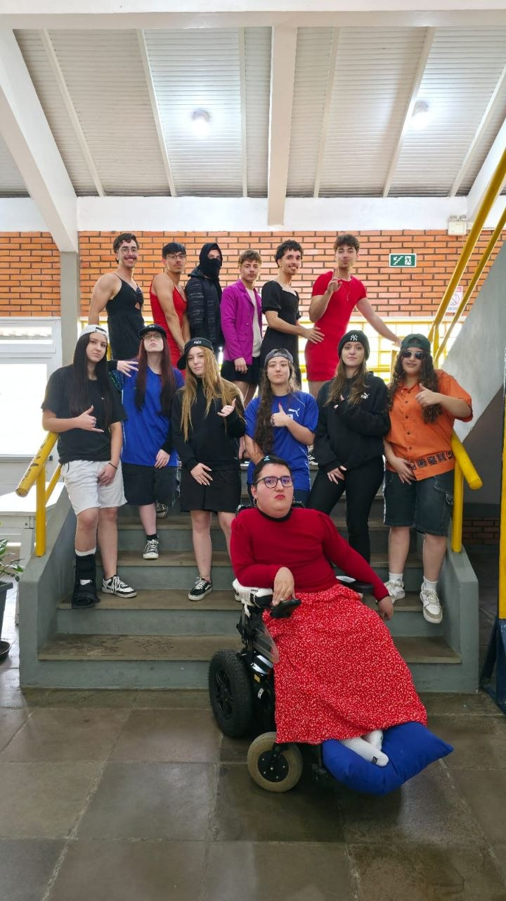
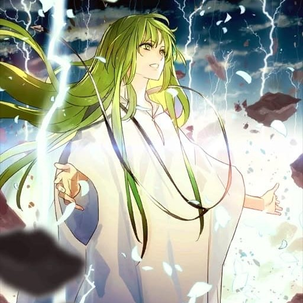
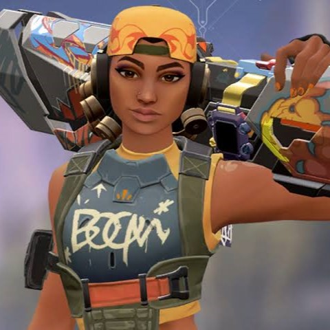
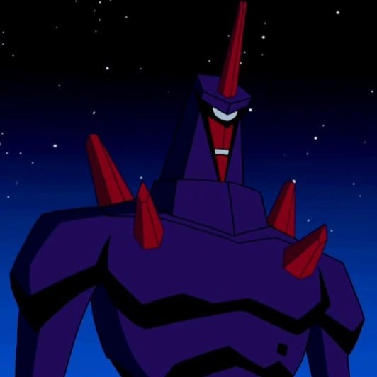
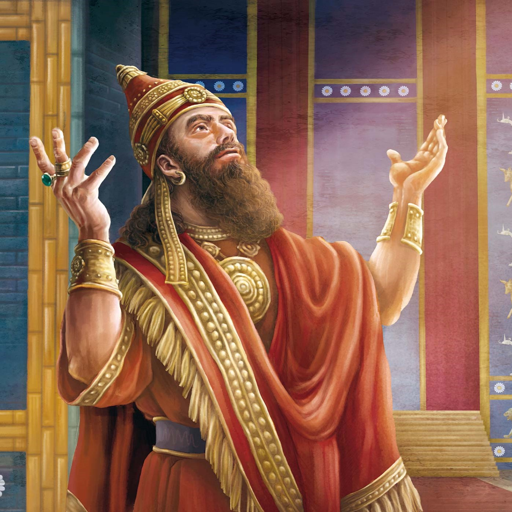

Miembros del grupo

Deniz Gabriel
La experiencia contribuyó a su inteligencia. Tiene 22 años y vive en São Leopoldo.

Pedro Fagundes
El chico es muy guapo y tiene un gran talento para la programación y el desarrollo de proyectos tecnológicos. Tiene 18 años y vive en Estância Velha.

Gabriel de Ponte
Recuerda, él es el de Ponte; Oliveira tiene dos. Tiene 18 años y vive en Estância Velha.

Matheo Biller
Circulan rumores de que es hijo de Putin y que juega a ser artificiero. Tiene 17 años y vive en Portão.

Willian Horbach
El programador de IA más guapo del grupo. Tiene 18 años y vive en Portão.
Música
Trabajo del Ecuador
Ecuador:

- Ubicación: noroeste de América del Sur, con gran diversidad ambiental y cultural.
- Cultura: influencias andina, africana y española; idioma principal español y preservación del kichwa.
- Festividades: Inti Raymi, Mama Negra y Diablada Pillaeña muestran la mezcla indígena y católica.
- Gastronomía: platos típicos como ceviche, llapingachos, hornado y fanesca.
- Historia: desde pueblos antiguos, expansión inca, conquista española e independencia en 1830.
También encontramos información sobre población, economía y valores como el Sumak Kawsay, que destaca la armonía entre humanos y naturaleza.
Descargar presentación del EcuadorGincana de Etep
Historia de la gincana en Etep de Portão RS: la gincana nació como una actividad escolar para promover integración, creatividad y espíritu colectivo entre los alumnos. Con el tiempo se convirtió en un evento anual esperado por toda la comunidad escolar.
- 1ª Actividad: CHAVO DEL OCHO EN ETEP! Los alumnos participaron en una actividad temática inspirada en "Chaves". Se disfrazaron de personajes icónicos como Chiquinha y Chaves. El objetivo fue estimular la creatividad, la expresión corporal y la integración.
- 2ª Actividad: PASTEL EN LA CARA! Un concurso individual (1 contra 1) de cultura general. Quien respondía incorrectamente recibía una "tortada" en el rostro del compañero que acertaba. La actividad promovió aprendizaje, interacción y diversión.
- 3ª Actividad: GRENAL EN ETEP! Una jornada temática sobre el clásico Gre-Nal. La clase se dividió entre hinchas de Grêmio e Internacional. Los alumnos vistieron los colores de los equipos, participaron en juegos y se sacaron fotos.
- 4ª Actividad: La elección del profesor padrino Reconocimiento del profesor Vagner Maciel Cunha como padrino de la clase, un momento especial que honra al maestro que acompañó al grupo durante esta etapa escolar, celebrando su dedicación e influencia positiva en la formación de los estudiantes.


El evento de la gincana refuerza el orgullo de Etep, estimula la participación de los estudiantes y celebra la tradición de la escuela en Portão RS.
Fiesta de San Juan en la ETEP
La tradicional fiesta junina de la ETEP Portão RS es uno de los eventos más esperados del calendario escolar. Alumnos, profesores y funcionarios se reúnen para celebrar la cultura popular brasileña con mucha música, danza y comidas típicas. La cancha de la escuela se transforma en un gran arraial, decorado con banderines coloridos, globos y una fogata simbólica, creando un ambiente de alegría e integración entre toda la comunidad escolar.
- Quadrilha de los alumnos: Presentación de quadrilha organizada por los estudiantes, con coreografías ensayadas en las clases de educación física y teatro, valorizando la tradición nordestina.
- Puestos de comidas típicas: Palomitas, pé-de-moleque, canjica, quentão (sin alcohol), maíz verde y dulces variados preparados por los propios alumnos y familias.
- Concurso de traje caipira: Desfile creativo donde alumnos y profesores muestran sus caracterizaciones, con premiaciones para los más originales y divertidos.
- Juegos juninos: Pesca, aro, boca del payaso y correo elegante garantizan la diversión de todas las edades durante el evento.

La fiesta de San Juan fortalece los lazos comunitarios, rescata tradiciones culturales y proporciona momentos inolvidables de confraternización en la ETEP.
Interseries de Voleibol en la ETEP
Las interseries de voleibol de la ETEP Portão RS son una tradición deportiva que moviliza la escuela durante el año lectivo. El torneo reúne equipos formados por alumnos de diferentes series y cursos, promoviendo la práctica deportiva, el espíritu de equipo y la sana competencia entre los estudiantes. Los juegos ocurren en la cancha polideportiva de la escuela, con gradas llenas de hinchas vibrantes.
- Formato del campeonato: Disputa en fase de grupos seguida de eliminación directa, con juegos al mejor de tres sets, siguiendo las reglas oficiales adaptadas para el ambiente escolar.
- Equipos mixtos: Incentivo a la participación de niños y niñas juntos, promoviendo la igualdad de género en el deporte y la integración entre diferentes turmas.
- Arbitraje estudiantil: Alumnos del curso de educación física o voluntarios capacitados actúan como árbitros y mesarios, desarrollando liderazgo y responsabilidad.
- Premiación y reconocimiento: Trofeos y medallas para los tres primeros puestos, además de mención honorífica para el jugador destacado y la hinchada más animada.

Las interseries de voleibol consolidan el deporte como herramienta pedagógica, incentivando hábitos saludables, trabajo en equipo y orgullo de representar la propia turma en la ETEP.
Interseries de Futsal en la ETEP
El torneo interseries de futsal es una de las competencias más emocionantes y disputadas de la ETEP Portão RS. Con juegos rápidos, técnicos y llenos de garra, el campeonato atrae gran público y revela talentos entre los alumnos. La cancha se vuelve escenario de regates, goles bonitos y grandes atajadas, todo en un clima de respeto y fair play.
- Reglamento adaptado: Partidos de dos tiempos de 15 minutos, con cronómetro parado, sustituciones libres y reglas de la FIFA ajustadas para el contexto escolar.
- Categorías e inclusión: Disputas en las categorías masculina, femenina y mixta, garantizando espacio para todos los estudiantes que quieren jugar.
- Organización colaborativa: La comisión organizadora es formada por alumnos, profesores de educación física y coordinación, compartiendo responsabilidades en la logística y divulgación.
- Clima de hinchada: Hinchadas organizadas por sala, con cantos, banderas y coreografías, transforman cada juego en una fiesta deportiva memorable.

El futsal interseries de la ETEP va más allá de la competencia: enseña disciplina, respeto al adversario y la importancia del colectivo, valores que los alumnos llevan para la vida toda.
Show de Talentos en la ETEP
El Show de Talentos de la ETEP Portão RS es el escenario donde los estudiantes brillan y muestran sus habilidades artísticas para toda la comunidad escolar. Música, danza, teatro, poesía, magia, stand-up comedy y performances inesperadas transforman el auditorio de la escuela en un verdadero teatro de variedades, celebrando la diversidad de dones presentes entre los alumnos.
- Inscripciones abiertas a todos: Cualquier alumno, individualmente o en grupo, puede inscribirse en las categorías: canto, danza, instrumento musical, artes escénicas y performance libre.
- Ensayo y preparación: Semanas de ensayos con apoyo de profesores de arte, música y teatro, garantizando calidad técnica y seguridad en las presentaciones.
- Jurado y votación popular: Evaluación mixta: jurado técnico (profesores e invitados) y voto del público presente, con categorías como mejor performance, más creativo y elección de la platea.
- Revelación de nuevos talentos: Muchos alumnos descubren vocaciones artísticas en el escenario del show de talentos, algunos incluso siguiendo carrera profesional después de la experiencia.
El Show de Talentos de la ETEP es una victoria de la autoexpresión, coraje y creatividad, probando que la escuela también es lugar de arte y sueños realizados.
Sarau en la ETEP
El Sarau de la ETEP Portão RS es un encuentro cultural que une literatura, música y arte en una noche de sensibilidad y talento. Más que lecturas de poesías y textos autorales, el evento cuenta con presentaciones musicales de alumnos y profesores, transformando el espacio escolar en un verdadero escenario de expresión artística e intercambio de experiencias.
- Lecturas y declamaciones: Alumnos comparten poesías, crónicas, cuentos y textos de autoría propia o de autores admirados, en portugués y español, valorizando la lengua y la literatura.
- Show de los alumnos: Presentaciones musicales solo, en dúos o bandas formadas por los estudiantes, con repertorio variado que va del MPB al rock, pasando por el folk y el rap.
- Participación de los profesores: Docentes también suben al escenario para cantar, tocar o declamar, rompiendo barreras y mostrando que el arte pertenece a todos en la comunidad escolar.
- Ambiente acogedor: Iluminación escénica, alfombras, almohadas y decoración temática crean una atmósfera íntima e inspiradora, propicia a la escucha atenta y la emoción compartida.
El Sarau de la ETEP celebra la palabra, la música y el encuentro humano, reforzando que la educación también se hace con sensibilidad, escucha y belleza.
Show de la Banda Rainha Musical en la ETEP
La banda Rainha Musical llevó su energía y talento a la ETEP Portão RS en una presentación sorpresa que marcó a estudiantes y profesores. Conocida por su gira por diversas escuelas de la región, el grupo llegó sin aviso previo y transformó el intervalo en un verdadero festival, con un show vibrante que contagió a todos con mucho ritmo, carisma e interacción.
- Gira escolar: La banda está recorriendo varias escuelas de la región, llevando música en vivo para estudiantes y promoviendo la cultura artística fuera de los escenarios convencionales.
- Show sorpresa: La presentación en la ETEP fue anunciada solo en el momento, generando euforia inmediata. Alumnos corrieron al patio y la cancha para acompañar de cerca.
- Escenario abierto para alumnos: En un momento especial, la banda invitó a estudiantes cantantes a subir al escenario y soltar la voz junto con los músicos profesionales, revelando nuevos talentos de la casa.
- Interacción y proximidad: Los integrantes de la Rainha Musical conversaron con el público, sacaron fotos, repartieron regalos y dejaron un mensaje de incentivo a los sueños artísticos de los jóvenes.
La visita de la Rainha Musical a la ETEP fue mucho más que un show: fue un encuentro de generaciones musicales, una celebración de la juventud y la prueba de que el arte llega donde están los estudiantes.
Trote de Cambio de Género en la ETEP
El trote de cambio de género es una de las tradiciones más divertidas y esperadas de la ETEP Portão RS. En este día especial, los alumnos intercambian sus roles y se visten como el género opuesto, transformando la escuela en un desfile de creatividad, humor e irreverencia. La actividad celebra la diversidad, rompe estereotipos y promueve una reflexión lúdica sobre la identidad y el respeto a las diferencias.
- Maquillaje y caracterización: Los alumnos se preparan con mucha dedicación, usando maquillaje, pelucas, ropa y accesorios para crear caracterizaciones creativas y divertidas.
- Desfile por la escuela: Los estudiantes desfilan por los pasillos y salones de la ETEP mostrando sus producciones, con mucha música, risas y fotos por todas partes.
- Concurso de fantasías: Se premian las caracterizaciones más originales y divertidas, con categorías como el más creativo, el más gracioso y la mejor producción.
- Mensaje de respeto: Más allá de la diversión, la actividad transmite un mensaje importante sobre la libertad de expresión, la empatía y el respeto a la diversidad.

El trote de cambio de género es una fiesta de identidad y expresión, donde la ETEP celebra la diversidad con alegría, creatividad y mucho respeto.
Trabajo de los personajes

Johann Wolfeschlegelsteinhausenbergerdorff
El personaje de Deniz se llama Johann. Nació en Alemania y actualmente vive allí. Tiene 25 años y estudia Psicología. Le interesa comprender el miedo y su influencia en el comportamiento humano. Su objetivo es descubrir por qué las personas reaccionan de manera diferente ante sus temores y cómo el miedo puede influir en sus decisiones y emociones.

Enkidu
El personaje de Pedro se llama Enkidu. Es un poderoso guerrero que participa en intensos combates y demuestra una gran fuerza y resistencia. Su objetivo es proteger a quienes considera importantes y enfrentarse a cualquier rival con valentía. Aunque parece serio y reservado, también muestra un fuerte sentido de lealtad y justicia. Gracias a sus extraordinarias habilidades, destaca como uno de los luchadores más temidos y respetados del juego.

Raze
El personaje de Gabriel se llama Raze. Su edad es desconocida. Vive en Brasil, en la ciudad de Salvador de Bahía, y convive con los demás agentes del Protocolo VALORANT. Estudia ingeniería y le apasiona crear explosivos y desarrollar nuevas tecnologías para las misiones. Es una persona valiente, enérgica y muy segura de sí misma. Su objetivo es utilizar sus inventos para proteger a su equipo y superar cualquier desafío que enfrente.

Sugilite
El personaje de Matheo se llama Sugilite. Es un Crystalsapien, el único natural de su especie, y existe una copia genética suya en el Omnitrix. Su edad es desconocida. Es prácticamente inmortal, ya que incluso si muere puede volver a la vida. Vive en Petropia, un planeta formado por una enorme masa de cristal de forma irregular, donde convive con los Petrosapiens, los Subsapiens y los Antrosapiens, a quienes protege como guardián del planeta. Estudia Defensa Planetaria, Restauración de Ecosistemas, Gemología y Manipulación de Energía.

Nabucodonosor II
El personaje de Willian se llama Nabucodonosor II. Vivió en Babilonia hace 2660 años, en Mesopotamia (actual Irak). Se relacionó con Nabopolasar, Shuadamqa, la reina Amitis de Media y Amel-Marduk. Dedicó gran parte de su vida al estudio de las tácticas y estrategias militares, la administración política y la diplomacia, así como la religión y los rituales.